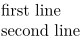

Contents
Summary
The command
\crlf
is used to break lines.
\crlf stands for two control characters used to represent a new line or line break:
Carriage Return, CR (\r): Moves the cursor to the beginning of the line.
Line Feed, LF (\n): Moves the cursor down to the next line.
Description
Breaks the line in a paragraph (carriage return). Alternatively, use
\startlines
...
\stoplines
.
Examples
Example 1
-
first line\crlf second line - 